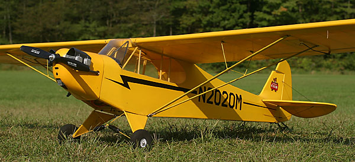
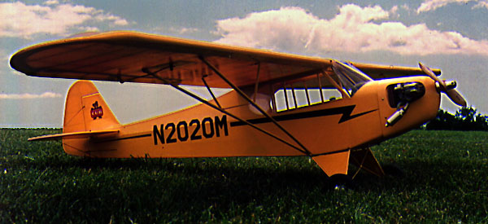

NEAT Fair 2006
|
This SIG Mfg. 1/6 scale Cub has a long and checkered history. I originally bought it for $25 in about 1980. It had been framed up by another modeler as his first RC project and despite his best efforts there was much to be reworked.
Over the years I picked away at it, finally having it ready to go in the winter of 1988-89 with an inverted two stroke O.S. 30 for power. Late one winter's afternoon I test flew it off a frozen lake in Maine. Due to an unseen rigging error, I stalled on takeoff, bent the landing gear and broke the prop. That was it for the evening, and it went back into storage while I developed a new plan. Frankly, I wasn't that happy with it's appearance, and so instead of replacing the prop and fixing the warp, I stripped the covering and restored the model again. This time with 21st Century fabric, a two piece wing, functional struts and a horizontally mounted O.S. 40 four-stroke as seen below. Two mini servos are mounted in the wings for ailerons, with three standard servos in the fuselage baggage compartment. The rudder has a prototypical pull-pull system while the elevator has an internal pushrod. The markings were chosen based on a full scale Cub in Maine that also has float fittings on it for summer time fun. It was again ready for test flying on July 24, 1993, moments after the picture below was taken. As the story goes, all's well that ends well. Sure it has had a bump or bruise since then, but it lives on, and thrives. A couple of moves prevented me from flying the Cub for a while, and in 2006 I decided to convert it to electric power. I fit it with a new cowl as shown at the top of the page, and an Astro Flight 825GM brushless geared motor and a 4S2P 4000mAh Li-Poly battery. It can use a bunch of additional detailing, but for now it is great to have it back in the air. |

With O.S. 40 4-stroke - July 24, 1993
Copyright 1998-2013, Thayer Syme. All rights reserved